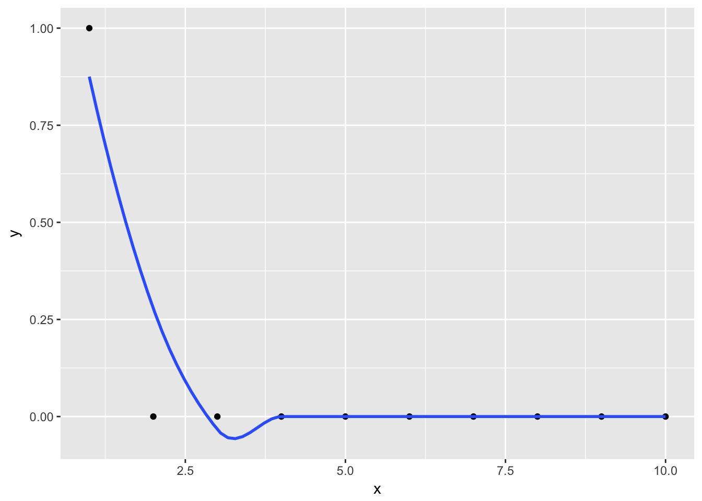

Chapter 4 Non-parametric Regression
We assume a model of the form
\[ E[Y|X = x] = m(x)\] which is more general than assuming \(Y_i = m(x_i) + \epsilon_i\) since in the former, the noise does not have to be additive. We can use Bayes’ Theorem to deduce such an estimator \(\hat{m}\) using density estimates of our predictor and response variable. In that sense, non-parametric regression really builds on top of non-parametric density estimation.
\[ \begin{split} P[Y|X] &= \frac{\mathbb{P}[X|Y]}{\mathbb{P}[Y]}\mathbb{P}[Y] \\ f_{Y|X} & = \frac{f_{X|Y}}{f_X}f_Y \\ f_{Y|X} & = \frac{f_{X, Y}}{f_X} \;\;\;\;\;\;\;\;\;\;\;\;\;\;\;\;\;\;\;\;\; \text{|} \times y\\ f_{Y|X}y & = \frac{f_{X, Y}}{f_X}y \;\;\;\;\;\;\;\;\;\;\;\;\;\;\;\;\;\;\;\; \text{| taking the integral}\\ E[Y|X] & = \int \frac{f_{X, Y}}{f_X}ydy \end{split} \] Whereas for \(\hat{f}_{X, Y}\), we can use a product kernel. This formula simplifies quite a bit and yields the Nadaraja-Watson Kernel, which is essentially just a weighted mean of response values. \[\hat{m}(x) = \frac{\sum\limits_{i = 1}^n K\Big(\frac{x-X_i}{h}\Big)Y_i}{\sum\limits_{i = 1}^nK\Big(\frac{x-X_i}{h}\Big)} = \frac{\sum\mathcal{w}(x)_i Y_i}{\sum\mathcal{w}(x)_i} = \sum\limits_{i = 1}^n \tilde{\mathcal{w}}(x)_i Y_i = \tilde{\mathbf{w}}(x)'\mathbf{Y}\] The weights \(\tilde{\mathcal{w}}_i\) are normalized weights, i.e. \(\tilde{\mathcal{w}}_i = \mathcal{w}_i / \sum\limits_{k = 1}^n \mathcal{w}_k\)
4.1 Alternative Interpretation
It can be easily shown that the solution corresponds to the following minimization problem:
\[ m(x) = \arg\min\limits_{m_x} \sum\limits_{i = 1}^nK\Big(\frac{x-X_i}{h}\Big)\big(Y_i-m_x\big)^2 \]
We can interpret this as a weighted (local) regression. For a given \(x\), search for the best local constant \(m_x\) that minimizes the weighted residual sum of squares the most. Residuals of data points close to \(x\) get a high weight in this sum (via the kernel).
4.2 The Bandwidth
The bandwidth parameter \(h\) has a similar role as in non-parametric density estimation. Large \(h\) implies very smooth functions, low variance, high bias. Small \(h\) on the other hand imply (more) erratic functions, high variance, low bias.
An interesting case is \(h \rightarrow \infty\), for which all weights become equal. This corresponds to an estimator \(m(x) = \bar{y}\), with one degree of freedom (see below).
4.3 Hat Matrix
As in chapter 1, we can also obtain a smoother matrix \(S\) that maps the observed response values to the fitted values. From above, we have: \[\hat{y}_i = \tilde{\mathbf{w}}(x)'\mathbf{Y}\]
\[ \mathbf{\hat{Y}} = \mathcal{S} \mathbf{Y} = \begin{pmatrix}\hat{y}_1 \\\vdots\\\hat{y}_n\end{pmatrix} = \begin{pmatrix}\tilde{\mathbf{w}}(x_1)'\\\vdots\\\tilde{\mathbf{w}}(x_n)'\end{pmatrix} \times \begin{pmatrix}y_1 \\\vdots\\y_n\end{pmatrix} \] Where \(\tilde{\mathbf{w}}(x_1)'\) is a row vector of length \(n\) with the normalized kernel weights.
Let us adopt the notation from the script (kind of) and denote the kernel weight for observation \(w_s\) on observation \(x_r\) with \(\tilde{w}_s(x_r)\), i.e. \[ \tilde{w}_s(x_r) = \sum\limits_{s = 1} K\Big(\frac{x_r - x_s}{h}\Big) / \sum K(\cdot)\] The smoother matrix from above can be rewritten as a matrix with scalar entries instead of vectors
\[ \begin{pmatrix} \tilde{w}_1(x_1) \;\; \tilde{w}_2(x_1) \;\; \dots \;\;\tilde{w}_n(x_1) \\ \tilde{w}_1(x_2) \;\; \tilde{w}_2(x_2) \;\; \dots \;\;\tilde{w}_n(x_2)\\ \tilde{w}_1(x_3) \;\;\tilde{w}_2(x_3) \;\; \dots \;\;\tilde{w}_n(x_n) \\ \end{pmatrix} \] So \([S]_{r, s} = \tilde{w}_s(x_r)\).
This matrix can be obtained easily by smoothing n unit vectors \(u_{n \times 1}\). To obtain the j-th column, smooth the unit vector that has in the j-th position a \(1\) and all other positions \(0\). Let us assume equidistant x values. The following smoothed y values evaluated at all \(x \in \{1, ..., n\}\) give the values for the first column of \(S\).
j <- 1
n <- 10
u <- rep(0, n)
u[j] <- 1
data <- data_frame(
x = 1:n,
y = u
)
ggplot(data, aes(x = x, y = y)) + geom_point() + geom_smooth(se = FALSE)
But why? The trick is that, since all but the j-th y value are zero and therefore the sum is only taken over one element. For the non-zero element, the \(y_i\) is one, so the fitted value is just the normalized kernel weight.
\[\hat{m}(x_r)^{(j)} = \frac{K\Big(\frac{x_r - x_j}{h}\Big)}{\sum K(\cdot)} = \tilde{w}_j(x_r)\]
Here is one way to implement that in R for the Nadaraya-Watson Kernel.
n <- nrow(reg)
Id <- diag(n)
S <- matrix(0, n, n)
h <- "your bandwidth"
for (j in 1:n) {
S[, j] <- ksmooth(data$x, Id[, j], x.point = data$x, kernel = "normal", bandwidth = h)$y
}4.4 Degrees of Freedom
Note that we need a different measurement of degrees of freedom than the one we used in the parametric case in chapter 1, where the degrees of freedom simply corresponded to the number of parameters used. As this is non-parametric regression, we don’t have parameters and hence cannot sum up the number of parameters to calculate the degree of freedom. Recall from chapter 1 that the trace of the smoothing matrix was equal to the number of parameters used: \[tr(P) = \textbf{tr}(X(X'X)^{-1}X') = \textbf{tr}((X'X)^{-1}X'X) = \textbf{tr}(I_{p\times p}) = p\] Hence, we can generalize the concept of degrees of freedom from number of parameters to the trace of the smoother matrix. For regression, the two coincide, for non-parametric methods, we get an estimate of the degrees of freedom only via the trace.
There is a one-to-one relationship between the degrees of freedom and the bandwidth parameter \(h\), which we can show in a diagram:

This can be derived from the two extreme cases:
- \(h \rightarrow \infty\) means all weights are equal, which means for each data point \(x_i\), the fitted value \(\hat{m}(x_i)\) is just the grand mean of \(y\). This corresponds to one degree of freedom.
\[\hat{m}(x) = \bar{y} \]
- \(h \rightarrow 0\). If we assume \(n\) distinct, equi-spaced \(x_i\) values, then the fitted values in the neighborhood of \(\hat{m}(x_i)\) are just the observed response value \(y_i\), since all weights for points other than \(y_i\) are zero. Or to be more precise: If the distance between neighboring points is \(\eta\), then, for \(h \leqslant \eta\) :
\[ \hat{m}(x) = y_{i^*} \;\;\ \text{with} \;\; i^* = \arg\min\limits_{0 \leqslant i \leqslant n} |x - x_i| \] This corresponds to \(n\) degrees of freedom. * We can interpolate between these two extreme cases in a monotone way.
For non-parametric density estimation, this is very similar except that the esimates around a data point would not be constant for very small \(h\), but the weigth the kernel takes for that value of \(\frac{x-x_i}{h}\) because all but one of the summands are zero in \(\sum\limits_{i = 1}^n K\Big(\frac{x -x_i}{h}\Big)\).
4.4.1 Applications
There are two main applications for the degree of freedom:
- As a tuning parameter. For every \(h\), we can find the corresponding degrees of freedom or more interestingly - for every(desired) degree of freedom, we can find an \(h\). Instead of varying \(h\) directly, we can vary the degrees of freedom, which are directly comparable accross different techniques. We can compare OLS with different kernel smoothers, splines etc. (see below), which is not possible with \(h\) alone.
- For inference. For unbiased estimators (such as the variance of the residuals), we need the degrees of freedom (see below).
4.5 Inference
As with parametric regression, we want to do inference. Not on any parameters (since there are none), but on the fitted values. First and foremost, we want to obtain confidence intervals for the regression line, that is, obtaining point-wise lower and upper bounds of the confidence internal \[ I_i = \hat{m}(x_i) ± 1.96 *\hat{sd}(\hat{m}(x)) \] Which holds because the fitted value is asymtotically normally distributed. We know already how to obtain \(\hat{m}(x)\), now we need to find the standard deviation of the fitted values.
From the fundamental equation \(Cov(\mathbf{A}x) = \mathbf{A} Cov(x) \mathbf{A}'\), we get \[ \text{Cov}(\hat{m}(x)) = \text{Cov}(\mathcal{S}\mathbf{y}) = \mathcal{S} \text{Cov}(y) \mathcal{S}' = \sigma_\epsilon^2\mathcal{SS}' \;\;\;\;\;|\;\; \text{since Cov}(y) = \text{Cov}(\epsilon)\] Which is a \(p\times p\) matrix. For a specific data point \(x_i\), we have \[ \text{Var}(\hat{m}(x_i))= \text{Cov}(\hat{m}(x_i), \hat{m}(x_i)) = \hat{\sigma}_\epsilon^2 (\mathcal{S} \mathcal{S}')_{ii} \]
Now, we only need to estimate \(\sigma^2_\epsilon\). Using the generalized method to compute degrees of freedom, we can use the following estimator:
\[ \hat{\sigma}_\epsilon^2 = \frac{1}{n-\textbf{tr}(\mathcal{S})} \sum\limits_{i = 1}^n (Y_i - \hat{m}(x_i))^2\]
4.6 Local Polynomial Estimator
Expanding on the formulation of the Nadaraya-Watson Kernel as a weighted least square problem, we can use centered polynomials to approximate \(y_i\) instead of a local constant \(\hat{m}_x\). That is, computing our estimator as
\[\hat{m}(x) = \arg\min\limits_{m_x} \sum\limits_{i = 1}^nK\Big(\frac{x-X_i}{h}\Big) \big(Y_i-\beta_0 + \beta_1 (x_i -x) + ... \beta_{p-1} (x_i-x)^{p-1}\big)^2 \]
This has the advantage of yielding a lolcal linear regression curve at the borders, whereas the Nadaraya-Watson Kernel yields local constant regression curves in these regions (since at the border, no new points are are taken into account).
Another advantage is that we can find derivaties of the regression estimate at each point easily.
4.7 Smoothing splines
\[\sum\limits_{i = 1}^n (Y_i - \hat{m}(x_i))^2 + \lambda\int{m''(z)^2dz} \] Where \(\lambda\) is a smoothing parameter. There are two extreme cases:
- \(\lambda = 0\), Any perfectly interpolating function \(m\) is possible.
- \(\lambda \rightarrow \infty\). The ols solution with \(m''(x) = 0\).
At every distinct \(x_i\), there is a knot. The function \(\hat{m}(x)\) is a piecwise polynomial function where at each knot, the left and the right polynomial agree in their valued \(\hat{m}\) and the first and second derivative. For the \(n-1\) polynomials, you have \(4\) parameters each, so \((n-1)*4\) parameters to estimate. The constraints are \((n-2)*3 + 2\) conditions, leaving exactly \(n\) free parameters.
There is a kernel estimator which approximately corresponds to the smoothing spline solution. Interestingly, this solution has a locally varying bandwidth.